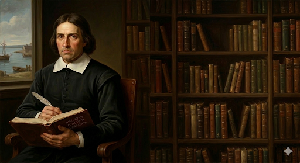
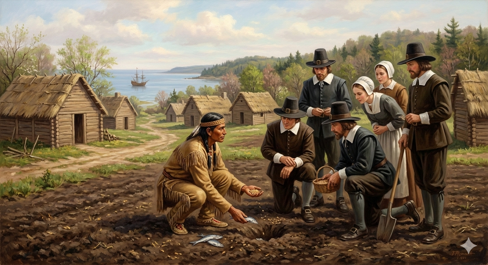

1. שנות פעילות, הקמה ויעדים
שנת הקמה: דצמבר 1620.
ישות מקימה: קבוצת פליטים דתיים הידועה כ"בדלנים" (Separatists), שלימים זכו לכינוי "הצליינים" (The Pilgrims), שמימנו את מסעם דרך משקיעים מלונדון. הקבוצה הפליגה על ספינת ה-"מייפלאוור" (Mayflower).
היעדים המקוריים והסטייה מהתוכנית: מטרתם הייתה להגיע לווירג'יניה, שם היה להם אישור רשמי להתיישב. אולם, סערות קשות הֵסִיטוּ את הספינה צפונה אל קייפ קוד (מסצ'וסטס של ימינו). מכיוון שנחתו מחוץ לשטח הזיכיון שלהם, לא היה להם שום מעמד חוקי. ה"מורדים" הלא-דתיים שעל הספינה טענו שכעת אינם כפופים לשום חוק, מה שהוביל לכתיבת המסמך המכונן - "אמנת המייפלאוור" (Mayflower Compact) - כדי למנוע אנרכיה ולהתאגד לחברה אזרחית אחת.
2. רקע המייסד: ויליאם ברדפורד

ויליאם ברדפורד (William Bradford) (1590–1657)
ילדות ומשבר: נולד ביורקשייר, אנגליה. התייתם בגיל צעיר. כנער, נמשך להטפות ה"בדלנים" - קבוצה נוצרית רדיקלית שהוצאה אל מחוץ לחוק משום שסירבה להכיר בסמכות הכנסייה האנגליקנית. כדי להימנע ממאסר, הוא וחברי קהילתו נמלטו להולנד, חיו שם בעוני 12 שנים, ולבסוף החליטו להגר לאמריקה כדי לשמור על זהותם האנגלית והדתית כאחד.
הישגים ומנהיגות: ברדפורד חתם על אמנת המייפלאוור, ונבחר למושל המושבה מיד לאחר החורף הראשון הקטלני. הוא כיהן כמושל במשך יותר מ-30 שנה. הישגו ההיסטורי הגדול ביותר, מעבר להישרדות המושבה, הוא כתיבת יומנו המפורסם "על מטע פלימות'" (Of Plymouth Plantation), שהוא המסמך ההיסטורי המקיף והחשוב ביותר שמתעד את חייהם ומאבקיהם של הצליינים באמריקה.
3. אידאולוגיה: בדלנות דתית וקונצנזוס
פלימות' מייצגת את הגרעין הקשה ביותר של הפרוטסטנטיות האנגלית, אך גם את זרעי הדמוקרטיה:
- בדלנות מוחלטת (Separatism): בניגוד לפוריטנים של מסצ'וסטס שרצו "לטהר" את הכנסייה האנגלית מבפנים, הצליינים בפלימות' האמינו שהכנסייה מושחתת לחלוטין מעבר לכל תקנה, וחובה להתנתק ממנה כליל.
- אמנת המייפלאוור (Mayflower Compact): כדי למנוע מרד בקרב הנוסעים הזרים, מנהיגי הצליינים ניסחו אמנה שבה כל הגברים על הסיפון התחייבו להתאגד ل"גוף פוליטי אזרחי" (Civil body politic) ולציית לחוקים שייקבעו לטובת הכלל. זו הפעם הראשונה בהיסטוריה של אמריקה האירופית שממשלה הוקמה לא על בסיס זכות אלוהית או צו מלכותי, אלא על בסיס הסכמת הנשלטים.
4. גיאוגרפיה: מזל בתוך הטרגדיה
הבחירה בגיאוגרפיה של פלימות' לא הייתה מתוכננת, והיא התאפשרה בזכות צירוף מקרים היסטורי עגום:
- מפרץ פלימות' וקייפ קוד: הספינה הגיעה לקצהו של חצי האי קייפ קוד (Cape Cod) בתחילת החורף. לאחר חיפושים, הם מצאו מפרץ בעל נמל סביר ומים מתוקים (Town Brook) הזורמים אליו. האדמה הייתה חולית, מסלעית ופחות פורייה מזו שבווירג'יניה.
- הכפר הנטוש של שבט הפאטוקסט (Patuxet): המתיישבים גילו, להפתעתם, אדמה שהייתה כבר מבוראת מעצים ומוכנה לחקלאות. הם לא ידעו ששנים ספורות קודם לכן (1616-1619), מגפה קטלנית (כנראה אבעבועות שחורות או לפטוספירוזיס שהביאו סוחרים אירופאים) מחקה את רוב אוכלוסיית הילידים באזור. הצליינים, באמונתם היוקדת, ראו בכך "השגחה אלוהית שפינתה עבורם את הדרך".
5. כלכלה: הישרדות, חג ההודיה וסקוואנטו

כלכלת פלימות' התחילה לא מתוך רצון לרווח, אלא ממאבק נואש נגד רעב:
- ההצלה על ידי סקוואנטו: הצליינים לא ידעו לדוג נכון באזור והזרעים האנגליים שלהם נכשלו. באביב 1621, הם פגשו יליד דובר אנגלית בשם טיסקוואנטום (Tisquantum - סקוואנטו). הוא היה השורד האחרון מכפר הפאטוקסט. סקוואנטו לימד אותם את חקלאות ה"שלוש אחיות" (תירס, שעועית, דלעת) וכיצד לדשן את האדמה החולית באמצעות דגי הרינג.
- "חג ההודיה" (Thanksgiving): קציר הסתיו של 1621 היה כה מוצלח שהמתיישבים ערכו סעודת חג בת שלושה ימים יחד עם הצ'יף מסאסויט ו-90 מלוחמיו. אירוע זה התקבע בזיכרון הלאומי כחג ההודיה הראשון.
- מסחר לפירעון חובות: כדי להחזיר את חובותיהם למשקיעים בלונדון, המתיישבים סחרו בפרוות בונה (Beaver pelts) ועצים, ובהמשך עברו לכלכלת דיג מסחרית קטנה ולגידול בקר.
6. דמוגרפיה ומבנה חברתי: הקהילה הקטנה
ההתחלה הדמוגרפית של פלימות' הייתה קטנה ואסונית:
- חורף המוות: מתוך 102 הנוסעים שהגיעו על המייפלאוור (רובם משפחות, גברים, נשים וילדים), מחציתם מתו במהלך החורף הראשון ממחלת הצפדינה, דלקת ריאות וקור חודר עצמות.
- קצב צמיחה איטי: בניגוד לשכנתה מסצ'וסטס שקלטה עשרות אלפים, פלימות' נותרה מושבה קטנה ואינטימית מאוד. גם עשור לאחר הקמתה, היו בה רק כמה מאות תושבים. החברה הייתה שוויונית למדי, מאוחדת באמונה ובמשמעת קהילתית נוקשה, ללא פערים כלכליים דרמטיים.
7. מאבקי השליטה: סופה של העצמאות הקטנה
פלימות' מעולם לא הצליחה לעגן את קיומה החוקי בעיני הכתר הבריטי, מה שהוביל בסופו של דבר להיבלעותה על ידי שכנתה הגדולה והחזקה:
הסיפוח למסצ'וסטס (1691)
- מועדי המאבק: תקופת הדומיניון (1686) והסיפוח הסופי (1691).
- אישים בולטים: המלך ויליאם השלישי והמלכה מרי.
- סיבת אובדן העצמאות: הבעיה הגדולה ביותר של פלימות' הייתה שמעולם לא היה להם זיכיון מלכותי רשמי (Royal Charter) מהמלך שמכיר בהם כמושבה חוקית. הם התקיימו במשך עשורים כ"מושבת פולשים" שנסמכת רק על "אמנת המייפלאוור" הפנימית שלהם. בשנת 1686, הכתר הבריטי מיזג בכפייה את פלימות' לתוך "דומיניון ניו אינגלנד" האוטוקרטי של המושל אנדרוס. לאחר מרד בוסטון ב-1689 והדחתו של אנדרוס, ניסו מנהיגי פלימות' לקבל בחזרה את עצמאותם מידי המלך החדש, ויליאם השלישי. אולם, המלך החליט שמושבת פלימות' קטנה, ענייה וחסרת חשיבות מכדי להתקיים כישות עצמאית. בשנת 1691, הכתר הוציא זיכיון חדש שסיפח את מושבת פלימות' באופן רשמי לתוך "פרובינציית מפרץ מסצ'וסטס". בכך הקיץ הקץ על המושבה העצמאית של הצליינים, והיא הפכה למחוז במדינה השכנה.
8. מחקר אטימולוגי: המושבה Plymouth
Plym (פלים)
מקור: שפה קלטית עתיקהמקור המילה מיוחס לשם הנהר (River Plym) שזורם בעיר הבריטית. המקור הקלטי העתיק הוא plum (עץ שזיף) או לחלופין מילה שמשמעותה פשוטה - "מים מתגלגלים".
-mouth (מאות')
מקור: אנגלית עתיקההמילה האנגלית העתיקה mūþa, שמשמעותה "פה". במונחים של גיאוגרפיה בריטית, היא מציינת את ה"שפך" – המקום שבו נהר נשפך אל הים.
Plymouth (פלימות')
הלחם המילים באנגליה יצר את השם הגאוגרפי: "שפך נהר הפלים".
צירוף מקרים היסטורי מדהים: המקום שבו נחתו הצליינים באמריקה נקרא כבר "פלימות'" במפות הניווט. קפטן ג'ון סמית' הפליג ומיפה את חופי אמריקה שש שנים קודם לכן (ב-1614) ונתן למפרץ הזה את השם. הצליינים בסך הכל יצאו מעיר הנמל פלימות' שבאנגליה, ובעקבות סערות מצאו את עצמם במקרה נוחתים בנקודה שכבר נקראה פלימות' על המפה האמריקאית שלהם!